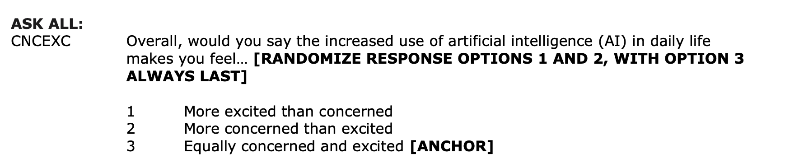

# load packages
library(tidyverse)
library(tidymodels)
library(knitr)
library(patchwork)
library(ggridges) # for ridgeline plots
library(RColorBrewer)
# set default theme in ggplot2
ggplot2::theme_set(ggplot2::theme_bw())Logistic regression
Prediction + Assessment
Announcements
Project EDA due March 24 at 11:59pm (on GitHub)
Statistics experience due April 15
Submit questions by the end of the day. Form at the end of today’s notes.
Topics
Interpreting logistic regression models
Relationship between odds and probabilities
Odds ratios
Computational setup
Data: Concern about rising AI
This data comes from the 2023 Pew Research Center’s American Trends Panel. The survey aims to capture public opinion about a variety of topics including politics, religion, and technology, among others. We will use data from 11201 respondents in Wave 132 of the survey conducted July 31 - August 6, 2023.
The goal of this analysis is to understand the relationship between age, time to complete the survey, and concern about the increased use of AI in daily life.
A more complete analysis on this topic can be found in the Pew Research Center article Growing public concern about the role of artificial intelligence in daily life by Alec Tyson and Emma Kikuchi.
Variables
ai_concern: Whether a respondent said they are “more concerned than excited” about in the increased use of AI in daily life (1: yes, 0: no)

Variables
age_cat: Age category- 18-29
- 30-49
- 50-64
- 65+
- Refused
survey_time: Time to complete the survey (in minutes)
Data prep
# change variable names and recode categories
pew_data <- pew_data |>
mutate(ai_concern = if_else(CNCEXC_W132 == 2, 1, 0),
age_cat = case_when(F_AGECAT == 1 ~ "18-29",
F_AGECAT == 2 ~ "30-49",
F_AGECAT == 3 ~ "50-64",
F_AGECAT == 4 ~ "65+",
TRUE ~ "Refused"
))
# Make factors and relevel
pew_data <- pew_data |>
mutate(ai_concern = factor(ai_concern),
age_cat = factor(age_cat))
# compute the time it took to do the interview
pew_data <- pew_data |>
mutate(
start_time = ymd_hms(INTERVIEW_START_W132),
end_time = ymd_hms(INTERVIEW_END_W132),
survey_time = as.numeric(difftime(end_time, start_time, units = "mins"))
)
pew_data <-
pew_data |> filter(survey_time <= 70)Bivariate EDA
Code
ggplot(data = pew_data, aes(x = age_cat, fill = ai_concern)) +
geom_bar(position = "fill", color = "black") +
labs(x = "",
y = "Proportion",
title = "AI Concern versus Age",
fill = "AI Concern") +
scale_fill_brewer(palette = "Dark2")
Bivariate EDA
Code
ggplot(data = pew_data, aes(x = survey_time, y = ai_concern,
fill = ai_concern)) +
geom_density_ridges() +
theme_ridges() +
labs(title = "AI concern versus survey time",
x = "Survey time in minutes",
y = "AI concern",
fill = "AI concern") +
theme(legend.position = "none") +
scale_fill_brewer(palette = "Dark2") 
Logistic regression model
Let \(\pi\) be the probability that \(Y = 1\). Then the population-level logistic regression model is of the form
\[ \log\big(\frac{\pi}{1-\pi}\big) = \beta_0 + \beta_1~X_1 + \beta_2X_2 + \dots + \beta_p X_p \]
where \(\log\big(\frac{\pi}{1-\pi}\big)\) = the log odds \(Y = 1\)
AI concern versus age
ai_concern_fit <- glm(ai_concern ~ age_cat, data = pew_data,
family = "binomial")
tidy(ai_concern_fit) |> kable(digits = 3)| term | estimate | std.error | statistic | p.value |
|---|---|---|---|---|
| (Intercept) | -0.248 | 0.068 | -3.625 | 0.000 |
| age_cat30-49 | 0.126 | 0.077 | 1.630 | 0.103 |
| age_cat50-64 | 0.538 | 0.078 | 6.904 | 0.000 |
| age_cat65+ | 0.643 | 0.078 | 8.284 | 0.000 |
| age_catRefused | 0.493 | 0.322 | 1.531 | 0.126 |
The model
| term | estimate | std.error | statistic | p.value |
|---|---|---|---|---|
| (Intercept) | -0.248 | 0.068 | -3.625 | 0.000 |
| age_cat30-49 | 0.126 | 0.077 | 1.630 | 0.103 |
| age_cat50-64 | 0.538 | 0.078 | 6.904 | 0.000 |
| age_cat65+ | 0.643 | 0.078 | 8.284 | 0.000 |
| age_catRefused | 0.493 | 0.322 | 1.531 | 0.126 |
\[\begin{aligned}\log\Big(\frac{\hat{\pi}}{1-\hat{\pi}}\Big) =& -0.248 + 0.126\times\text{age_cat30-49} + 0.538 \times \text{age_cat50-64}\\
&+ 0.643 \times \text{age_cat65+} + 0.493\times \text{age_catRefused} \end{aligned}\]
where \(\hat{\pi}\) is the predicted probability of being concerned about increased use of AI in daily life
Interpreting age_cat30-49: log-odds
| term | estimate | std.error | statistic | p.value |
|---|---|---|---|---|
| (Intercept) | -0.248 | 0.068 | -3.625 | 0.000 |
| age_cat30-49 | 0.126 | 0.077 | 1.630 | 0.103 |
| age_cat50-64 | 0.538 | 0.078 | 6.904 | 0.000 |
| age_cat65+ | 0.643 | 0.078 | 8.284 | 0.000 |
| age_catRefused | 0.493 | 0.322 | 1.531 | 0.126 |
The predicted log-odds of being concerned about increased use of AI in daily life are 0.126 higher for individuals 30 - 49 years old compared to 18-29 year-olds (the baseline group).
. . .
Warning
We would not use the interpretation in terms of log-odds in practice.
Interpreting age_cat30-49: odds
The predicted odds of being concerned about increased use of AI in daily life for 30 - 49 year-olds are 1.134 ( \(e^{0.126}\) ) times the odds for 18-29 year-olds.
Coefficients & odds ratios
The model coefficient, 0.126, is the expected difference in the log-odds when comparing 30 - 49 year olds to 18 - 29 year olds.
. . .
Therefore, \(e^{0.126}\) = 1.134 is the expected change in the odds when comparing 30 - 49 year olds to 18-29 year olds.
. . .
\[ OR = e^{\hat{\beta}_j} = \exp\{\hat{\beta}_j\} \]
Interpret in terms of percent change
You can also interpret the change in the odds in terms of a percent change. The percent change in the odds can be computed as the following
\[\% \text{ change } = (e^{\hat{\beta}_j} - 1) \times 100\]
Interpret the coefficient of age_cat30-49 (0.126) in terms of the percent change in the odds.
Quantitative predictor
Now let’s look at the relationship between survey_time and ai_concern
ai_time_fit <- glm(ai_concern ~ survey_time, data = pew_data,
family = "binomial")| term | estimate | std.error | statistic | p.value |
|---|---|---|---|---|
| (Intercept) | 0.069 | 0.037 | 1.853 | 0.064 |
| survey_time | 0.005 | 0.002 | 2.434 | 0.015 |
. . .
For each additional minute of taking the survey, the predicted odds of being concerned about increased AI in daily life multiply by a factor of 1.005 ( \(e^{0.005}\)).
Multiple predictors
Now let’s consider a model that takes into account age and survey_time
ai_concern_full_fit <- glm(ai_concern ~ age_cat + survey_time, data = pew_data, family = "binomial")Multiple predictors
| term | estimate | std.error | statistic | p.value |
|---|---|---|---|---|
| (Intercept) | -0.240 | 0.073 | -3.281 | 0.001 |
| age_cat30-49 | 0.127 | 0.077 | 1.640 | 0.101 |
| age_cat50-64 | 0.541 | 0.078 | 6.904 | 0.000 |
| age_cat65+ | 0.647 | 0.079 | 8.217 | 0.000 |
| age_catRefused | 0.497 | 0.322 | 1.543 | 0.123 |
| survey_time | -0.001 | 0.002 | -0.330 | 0.742 |
- Describe the type of respondent represented by the intercept.
- Interpret the coefficient of
survey_timein the context of the data.
Displaying logistic model in R
By default, tidy() displays the model in terms of \(\log\big(\frac{\hat{\pi}}{1 - \hat{\pi}}\big)\) . Use argument exponentiate = TRUE to display the model in terms of the odds.
tidy(ai_concern_full_fit, exponentiate = TRUE) |>
kable(digits = 3)| term | estimate | std.error | statistic | p.value |
|---|---|---|---|---|
| (Intercept) | 0.787 | 0.073 | -3.281 | 0.001 |
| age_cat30-49 | 1.135 | 0.077 | 1.640 | 0.101 |
| age_cat50-64 | 1.717 | 0.078 | 6.904 | 0.000 |
| age_cat65+ | 1.910 | 0.079 | 8.217 | 0.000 |
| age_catRefused | 1.644 | 0.322 | 1.543 | 0.123 |
| survey_time | 0.999 | 0.002 | -0.330 | 0.742 |
Prediction
Data: Risk of coronary heart disease
This data set is from an ongoing cardiovascular study on residents of the town of Framingham, Massachusetts.
high_risk: 1 = High risk of having heart disease in next 10 years, 0 = Not high risk of having heart disease in next 10 yearsage: Age at exam time (in years)totChol: Total cholesterol (in mg/dL)currentSmoker: 0 = nonsmoker; 1 = smoker
The goal is to use logistic regression to identify patients who are high risk of heart disease.
Univariate EDA

Bivariate EDA

Modeling risk of coronary heart disease
heart_disease_fit <- glm(high_risk ~ age + totChol + currentSmoker,
data = heart_disease, family = "binomial")
tidy(heart_disease_fit) |>
kable(digits = 3)| term | estimate | std.error | statistic | p.value |
|---|---|---|---|---|
| (Intercept) | -6.638 | 0.372 | -17.860 | 0.000 |
| age | 0.082 | 0.006 | 14.430 | 0.000 |
| totChol | 0.002 | 0.001 | 2.001 | 0.045 |
| currentSmoker1 | 0.457 | 0.092 | 4.951 | 0.000 |
Prediction and classification
We are often interested in using the model to classify observations, i.e., predict whether a given observation will have a 1 or 0 response
For each observation
- Use the logistic regression model to calculate the predicted log-odds the response for the \(i^{th}\) observation is 1
- Use the log-odds to calculate the predicted probability the \(i^{th}\) observation is 1
- Then, use the predicted probability to classify the observation as having a 1 or 0 response using some predefined threshold
Augmented data frame
heart_disease_aug <- augment(heart_disease_fit)# A tibble: 4,190 × 10
high_risk age totChol currentSmoker .fitted .resid .hat .sigma .cooksd
<fct> <dbl> <dbl> <fct> <dbl> <dbl> <dbl> <dbl> <dbl>
1 0 39 195 0 -3.06 -0.302 0.000594 0.890 6.94e-6
2 0 46 250 0 -2.38 -0.420 0.000543 0.890 1.25e-5
3 0 48 245 1 -1.77 -0.560 0.000527 0.890 2.24e-5
4 1 61 225 1 -0.751 1.51 0.00164 0.889 8.70e-4
5 0 46 285 1 -1.86 -0.539 0.000830 0.890 3.25e-5
6 0 43 228 0 -2.67 -0.366 0.000546 0.890 9.43e-6
7 1 63 205 0 -1.08 1.66 0.00154 0.889 1.15e-3
8 0 45 313 1 -1.88 -0.532 0.00127 0.890 4.86e-5
9 0 52 260 0 -1.87 -0.535 0.000542 0.890 2.08e-5
10 0 43 225 1 -2.22 -0.454 0.000532 0.890 1.44e-5
# ℹ 4,180 more rows
# ℹ 1 more variable: .std.resid <dbl>Predicted log-odds
# A tibble: 5 × 1
.fitted
<dbl>
1 -3.06
2 -2.38
3 -1.77
4 -0.751
5 -1.86 . . .
Observation 1
\[ \log(\hat{\text{odds}}) = \log\Big(\frac{\hat{\pi}}{1- \hat{\pi}}\Big) = -3.06 \]
Predicted odds
# A tibble: 5 × 1
.fitted
<dbl>
1 -3.06
2 -2.38
3 -1.77
4 -0.751
5 -1.86 . . .
Observation 1
\[ \hat{\text{odds}} = \frac{\hat{\pi}}{1- \hat{\pi}} = \exp\{-3.06\} = 0.0469 \]
Predicted probability
# A tibble: 5 × 1
.fitted
<dbl>
1 -3.06
2 -2.38
3 -1.77
4 -0.751
5 -1.86 . . .
Observation 1
\[ \text{predicted prob.} = \hat{\pi} = \frac{\hat{\text{odds}}}{1+\hat{\text{odds}}} = \frac{\exp\{-3.06\}}{1 + \exp\{-3.06\}}= 0.045 \]
Classifying observations
- An individual has a predicted probability of 0.045. Would you consider this person high risk for heart disease?
- An individual has a predicted probability of 0.321. Would you consider this person high risk for heart disease?
Predicted probabilities in R
Compute predicted probabilities by adding type.predict = "response" argument in augment()
. . .
heart_disease_aug <- augment(heart_disease_fit, type.predict = "response"). . .
Predicted probabilities for Observations 1 -5
# A tibble: 6 × 1
.fitted
<dbl>
1 0.0446
2 0.0845
3 0.145
4 0.321
5 0.135
6 0.0646Classifying observations
You would like to determine a threshold for classifying individuals as high risk or not high risk.
What considerations would you make in determining the threshold?
Classify using 0.5 as threshold
We can use a threshold of 0.5 to classify observations.
If \(\hat{\pi} > 0.5\), classify as 1
If \(\hat{\pi} \leq 0.5\), classify as 0
. . .
heart_disease_aug <- heart_disease_aug |>
mutate(pred_class = factor(if_else(.fitted > 0.5, 1, 0))). . .
# A tibble: 5 × 3
high_risk .fitted pred_class
<fct> <dbl> <fct>
1 0 0.0446 0
2 0 0.0845 0
3 0 0.145 0
4 1 0.321 0
5 0 0.135 0 Confusion matrix
A confusion matrix is a \(2 \times 2\) table that compares the predicted and actual classes. We can produce this matrix using the conf_mat() function in the yardstick package (part of tidymodels).
. . .
heart_disease_aug |>
conf_mat(high_risk, pred_class) Truth
Prediction 0 1
0 3553 635
1 2 0Visualize confusion matrix
heart_conf_mat <- heart_disease_aug |>
conf_mat(high_risk, pred_class)
autoplot(heart_conf_mat, type = "heatmap") 
Using the confusion matrix
Truth
Prediction 0 1
0 3553 635
1 2 0. . .
The accuracy of this model with a classification threshold of 0.5 is
\[ \text{accuracy} = \frac{3553 + 0}{3553 + 635 + 2 + 0} = 0.848 \]
Using the confusion matrix
Truth
Prediction 0 1
0 3553 635
1 2 0. . .
The misclassification rate of this model with a threshold of 0.5 is
\[ \text{misclassification} = \frac{635 + 2}{3553 + 635 + 2 + 0} = 0.152 \]
Using the confusion matrix
Truth
Prediction 0 1
0 3553 635
1 2 0Accuracy is 0.848 and the misclassification rate is 0.152.
. . .
What is the limitation of solely relying on accuracy and misclassification to assess the model performance?
What is the limitation of using a single confusion matrix to assess the model performance?
Changing threshold
What is the limitation of using a single confusion matrix to assess the model performance?
Sensitivity and specificity
True/false positive/negative
| Not high risk \((y_i = 0)\) | High risk \((y_i = 1)\) | |
|---|---|---|
| Classified not high risk \((\hat{\pi}_i \leq \text{threshold})\) | True negative (TN) | False negative (FN) |
| Classified high risk \((\hat{\pi}_i > \text{threshold})\) | False positive (FP) | True positive (TP) |
\(\text{accuracy} = \frac{TN + TP}{TN + TP + FN + FP}\)
\(\text{misclassification} = \frac{FN + FP}{TN+ TP + FN + FP}\)
False negative rate
| Not high risk \((y_i = 0)\) | High risk \((y_i = 1)\) | |
|---|---|---|
| Classified not high risk \((\hat{\pi}_i \leq \text{threshold})\) | True negative (TN) | False negative (FN) |
| Classified high risk \((\hat{\pi}_i > \text{threshold})\) | False positive (FP) | True positive (TP) |
. . .
False negative rate: Proportion of actual positives that were classified as negatives
- P(classified not high risk | high risk) = \(\frac{FN}{TP + FN}\)
False positive rate
| Not high risk \((y_i = 0)\) | High risk \((y_i = 1)\) | |
|---|---|---|
| Classified not high risk \((\hat{\pi}_i \leq \text{threshold})\) | True negative (TN) | False negative (FN) |
| Classified high risk \((\hat{\pi}_i > \text{threshold})\) | False positive (FP) | True positive (TP) |
. . .
False positive rate: Proportion of actual negatives that were classified as positives
- P(classified high risk | not high risk) = \(\frac{FP}{TN + FP}\)
Sensitivity
| Not high risk \((y_i = 0)\) | High risk \((y_i = 1)\) | |
|---|---|---|
| Classified not high risk \((\hat{\pi}_i \leq \text{threshold})\) | True negative (TN) | False negative (FN) |
| Classified high risk \((\hat{\pi}_i > \text{threshold})\) | False positive (FP) | True positive (TP) |
. . .
Sensitivity: Proportion of actual positives that were correctly classified as positive
Also known as true positive rate (TPR) and recall
P(classified high risk | high risk) = 1 − False negative rate
Specificity
| Not high risk \((y_i = 0)\) | High risk \((y_i = 1)\) | |
|---|---|---|
| Classified not high risk \((\hat{\pi}_i \leq \text{threshold})\) | True negative (TN) | False negative (FN) |
| Classified high risk \((\hat{\pi}_i > \text{threshold})\) | False positive (FP) | True positive (TP) |
. . .
Specificity: Proportion of actual negatives that were correctly classified as negative
- P(classified not high risk | not high risk) = 1 − False positive rate
Practice
Truth
Prediction 0 1
0 3553 635
1 2 0Calculate the
- False negative rate
- False positive rate
- Sensitivity
- Specificity
Using metrics to select model and threshold
| Metric | Guidance for use |
|---|---|
| Accuracy | For balanced data, use only in combination with other metrics. Avoid using for imbalanced data. |
| Sensitivity (true positive rate) | Use when false negatives are more “expensive” than false positives. |
| False positive rate | Use when false positives are more “expensive” than false negatives. |
| Precision = \(\frac{TP}{TP + FP}\) | Use when it’s important for positive predictions to be accurate. |
This table is a modification of work created and shared by Google in the Google Machine Learning Crash Course.
Choosing a classification threshold
A doctor plans to use your model to determine which patients are high risk for heart disease. The doctor will recommend a treatment plan for high risk patients.
Would you want sensitivity to be high or low? What about specificity?
What are the trade-offs associated with each decision?
ROC curve
So far the model assessment has depended on the model and selected threshold. The receiver operating characteristic (ROC) curve allows us to assess the model performance across a range of thresholds.
. . .

x-axis: 1 - Specificity (False positive rate)
y-axis: Sensitivity (True positive rate)
Which corner of the plot indicates the best model performance?
ROC curve

ROC curve in R
# calculate sensitivity and specificity at each threshold
roc_curve_data <- heart_disease_aug |>
roc_curve(high_risk, .fitted,
event_level = "second")
# plot roc curve
autoplot(roc_curve_data)ROC curve in R
# A tibble: 20 × 3
.threshold specificity sensitivity
<dbl> <dbl> <dbl>
1 -Inf 0 1
2 0.0259 0 1
3 0.0262 0.000281 1
4 0.0283 0.000844 1
5 0.0287 0.00113 1
6 0.0290 0.00141 1
7 0.0297 0.00169 1
8 0.0302 0.00197 1
9 0.0307 0.00225 1
10 0.0310 0.00253 1
11 0.0313 0.00309 1
12 0.0320 0.00338 1
13 0.0320 0.00366 1
14 0.0323 0.00422 1
15 0.0325 0.00450 1
16 0.0327 0.00478 1
17 0.0331 0.00506 1
18 0.0333 0.00534 1
19 0.0334 0.00591 1
20 0.0334 0.00619 1
Area under the curve
The area under the curve (AUC) can be used to assess how well the logistic model fits the data
AUC=0.5: model is a very bad fit (no better than a coin flip)
AUC close to 1: model is a good fit
. . .
heart_disease_aug |>
roc_auc(high_risk, .fitted,
event_level = "second"
)# A tibble: 1 × 3
.metric .estimator .estimate
<chr> <chr> <dbl>
1 roc_auc binary 0.696Recap
Interpreted coefficients of logistic regression
Calculated predicted probabilities from the logistic regression model
Used predicted probabilities to classify observations
Made decisions and assessed model performance using
- Confusion matrix
- ROC curve
Questions about content?
Next class
Inference for logistic regression
Complete Lecture 18 prepare